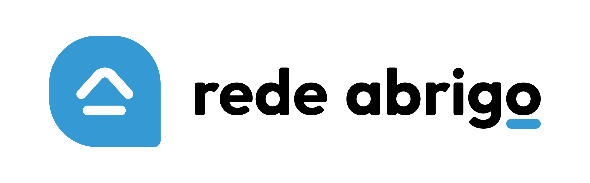

Plataforma de desejos e necessidades de crianças em acolhimento
Volume mobilizado:
Número de doações:
Float médio:
Rendimento do float:
Contribuição para organização:
Receita de taxa administrativa:
Ponto de equilíbrio:
Quantidade aproximada de pedidos necessários para cobrir os custos da plataformaPara avaliar a sustentabilidade da plataforma também é necessário considerar o custo anual de operação.
Esses custos consideram três elementos principais:
Importante: o primeiro ano tende a ter um custo maior porque inclui a construção da plataforma. Nos anos seguintes o custo tende a diminuir, ficando concentrado na operação e comunicação.